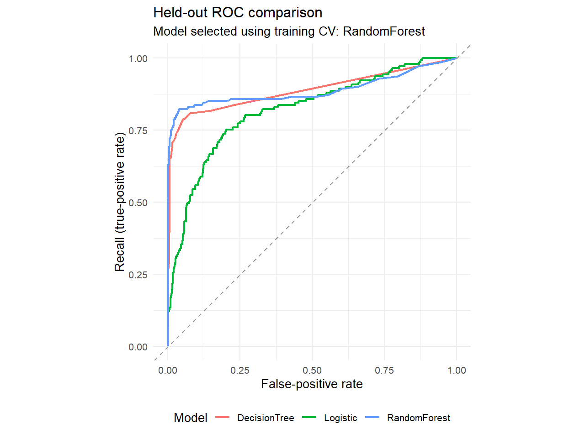
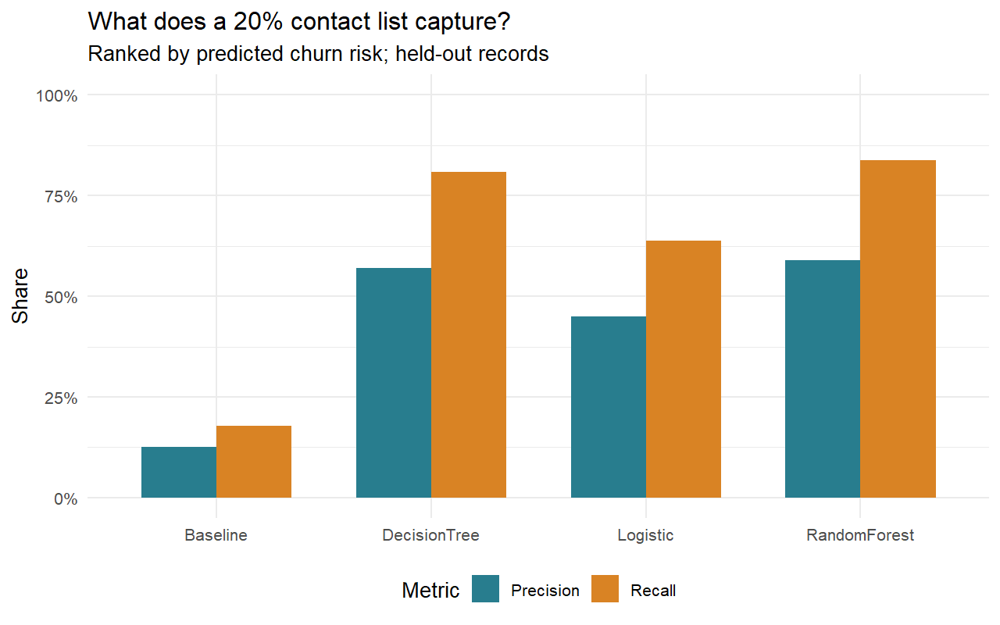
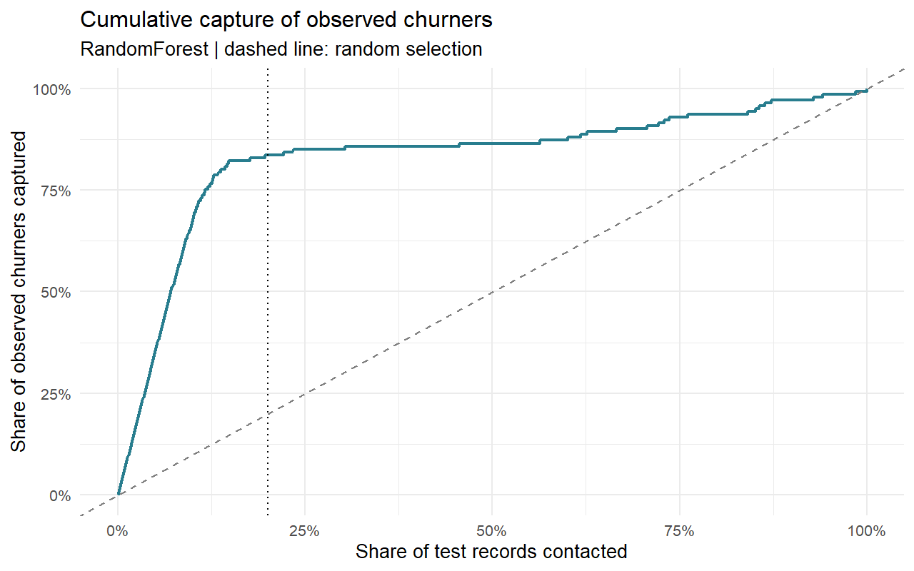
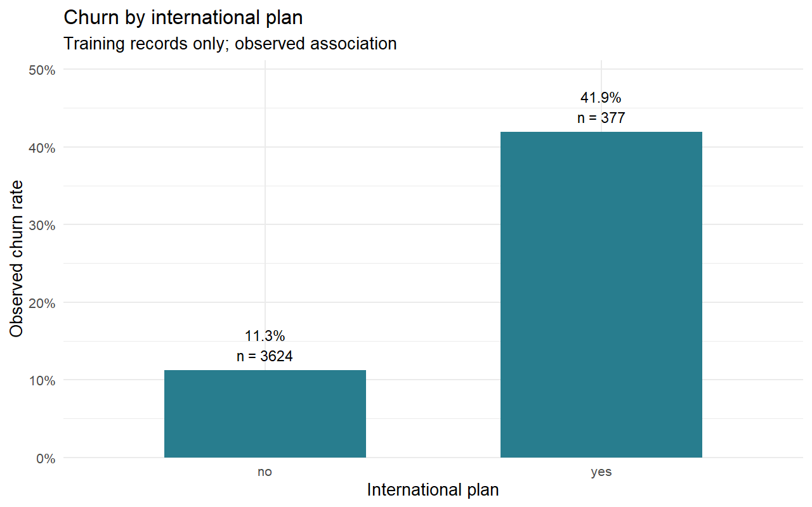
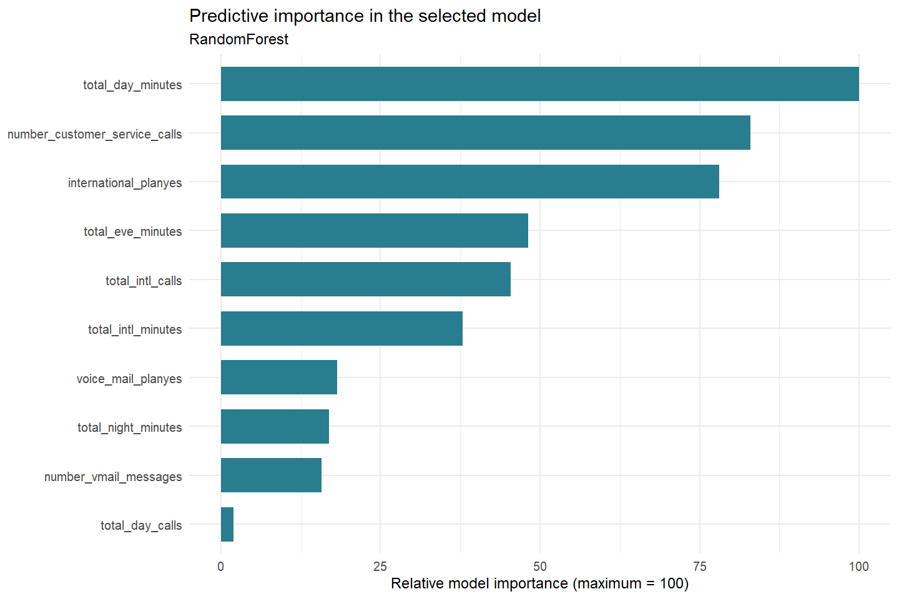

R portfolio / predictive analytics
Customer Churn Prediction
& Retention Prioritization
Mark Samuel | Generated 2026-11-18 | Artificial educational telecom data from modeldata::mlc_churn.
Question: How well can usage and account information rank churn risk, and what would a contact list covering 20% of records capture?
Evaluation design
Stratified 80/20 split; identical five-fold training resamples; hyperparameters and model chosen by training CV ROC AUC. Churn=yes is positive. The classification threshold of 0.5 and contact fraction of 20% were fixed in advance. The test set is used for final reporting, not selection.
| Split | Records | Churners | ChurnRate |
|---|---|---|---|
| Training | 4001 | 566 | 0.141 |
| Test | 999 | 141 | 0.141 |
Model selected before test evaluation: RandomForest
| Model | CV_ROC_AUC | CV_ROC_SD | CV_AveragePrecision |
|---|---|---|---|
| Logistic | 0.823 | 0.013 | 0.459 |
| DecisionTree | 0.904 | 0.015 | 0.799 |
| RandomForest | 0.926 | 0.004 | 0.88 |
Held-out performance
| Model | SelectedByCV | Threshold | Accuracy | Precision | Recall | Specificity | F1 | ROC_AUC | AveragePrecision | BrierScore | TP | FP | TN | FN |
|---|---|---|---|---|---|---|---|---|---|---|---|---|---|---|
| Logistic | FALSE | 0.5 | 0.875 | 0.674 | 0.22 | 0.983 | 0.332 | 0.819 | 0.525 | 0.092 | 31 | 15 | 843 | 110 |
| DecisionTree | FALSE | 0.5 | 0.946 | 0.885 | 0.709 | 0.985 | 0.787 | 0.888 | 0.772 | 0.05 | 100 | 13 | 845 | 41 |
| RandomForest | TRUE | 0.5 | 0.954 | 0.928 | 0.73 | 0.991 | 0.817 | 0.888 | 0.846 | 0.042 | 103 | 8 | 850 | 38 |
| Baseline | FALSE | 0.5 | 0.859 | NA | 0 | 1 | 0 | 0.5 | 0.141 | 0.121 | 0 | 0 | 858 | 141 |
Accuracy can hide missed churners. Recall measures how many observed churners are identified; precision measures how often flags are correct. ROC AUC measures ranking across thresholds. Average precision summarizes precision-recall performance using tied-score groups. Brier score measures squared probability error (lower is better). An undefined precision is shown as NA when a model predicts no positives.

Contact capacity: a hypothetical 20% list
| Model | SelectedByCV | ContactFraction | SelectedRecords | ObservedChurnersInSelection | PrecisionAtCapacity | RecallAtCapacity | LiftAtCapacity |
|---|---|---|---|---|---|---|---|
| Logistic | FALSE | 0.2 | 200 | 90 | 0.45 | 0.638 | 3.188 |
| DecisionTree | FALSE | 0.2 | 200 | 114 | 0.57 | 0.809 | 4.039 |
| RandomForest | TRUE | 0.2 | 200 | 118 | 0.59 | 0.837 | 4.18 |
| Baseline | FALSE | 0.2 | 200 | 25 | 0.125 | 0.177 | 0.886 |
For the selected model, the list captures 83.7% of observed churners at 59.0% precision. Lift compares that precision with the test churn rate. This describes historical ranking, not customers saved or financial return. Baseline probabilities equal training prevalence; tied ranks use source row order, so its capacity result is an arbitrary tied ordering, not a targeted strategy. The expected random-selection lift is 1.


Patterns for investigation


Plan differences and model importance describe associations, not reasons customers leave. Importance definitions differ by model and can be affected by correlated predictors. A retention experiment would be needed to measure whether an offer changes behavior.
Limits and next steps
This is an artificial benchmark with no observation dates, churn horizon, retention interventions, contact costs or response outcomes. A random holdout does not establish future performance. Before operational use, validate feature availability at prediction time, use a temporal holdout, assess calibration and uncertainty, and run a randomized retention pilot. CV results used for selection can be optimistic; the held-out result is the assessment for this workflow.
Source: modeldata documentation. Methods, package versions, split manifest and outputs are recorded alongside this report.